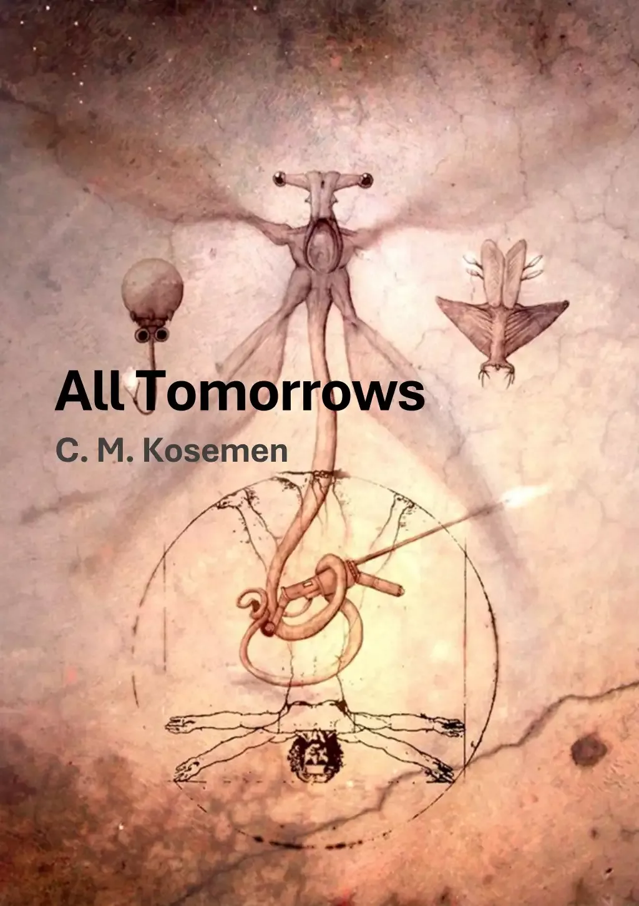
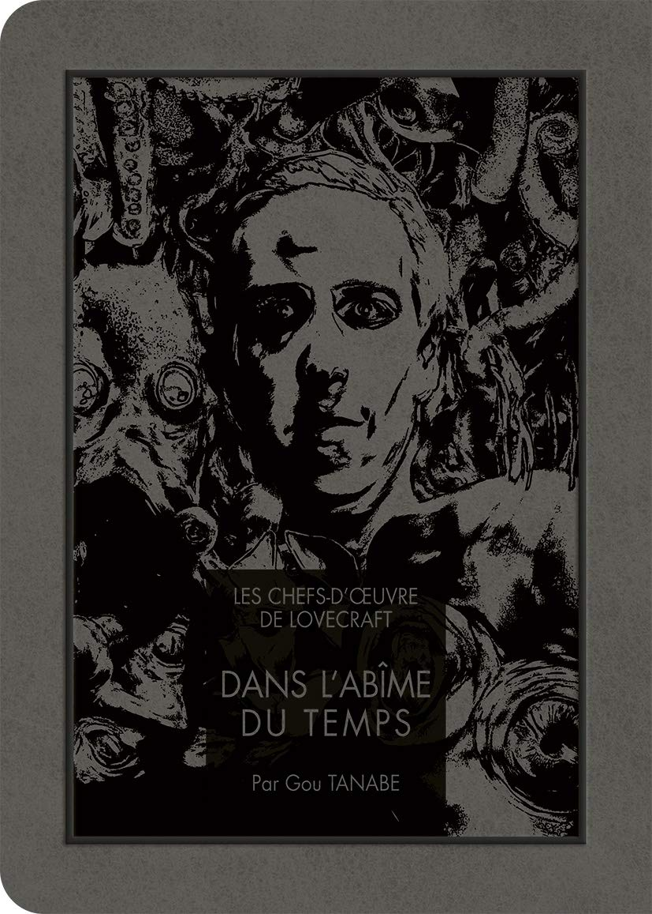
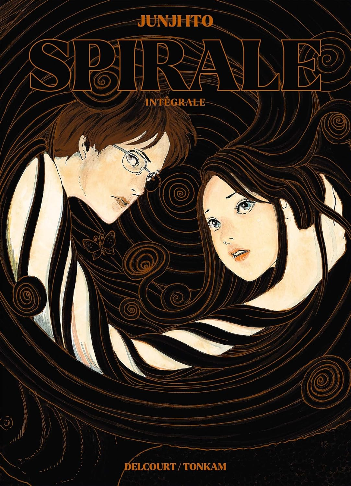

Une chronique spéculative de l'évolution humaine sur un milliard d'années — glaçante par sa plausibilité.

Le vertige du temps profond, entre érudition scientifique et terreur cosmique.

Une obsession géométrique qui contamine tout un village — l'horreur comme motif qui se répète.